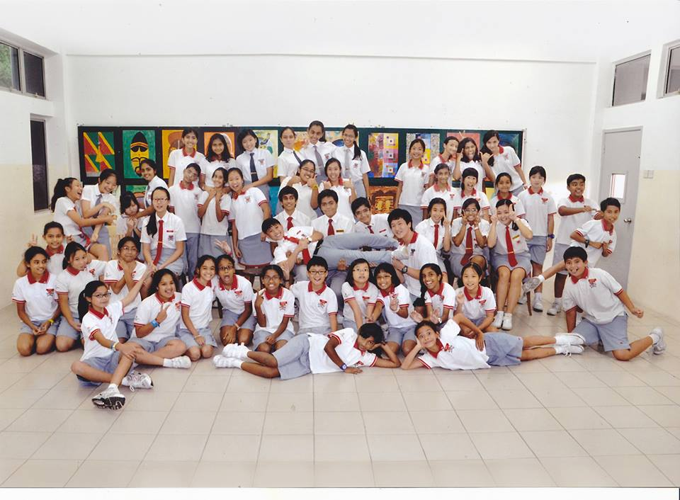

My past and present positions for extra-curricular activities
Positions
Positions

Prefect
Honestly, i didn't expect myself to join the prefectorial board. Although once i joined, there was a little harsh work and burden, it progressively became more fun and entertaining.
History: 2009-2012
Probationary Prefect (2009-2011)
Senior Prefect (2011-2012)
— elc International School

Secretary
As i mentioned in my hobbies, i enjoy playing table tennis; hence that was the trigger for me to join the table tennis Commitee. Eventhough i applied for the position of a treasurer, i'm still satisfied with the Secretary role.
History: 2019-2020
Secretary for the Table Tennis Club
—Methodist College Kuala Lumpur (MCKL)
Admin
Part of MCKL's tradition is to allow the students of the college to direct and handle orientation camps for new incoming students. Therefore, as an administrator, i am in charge of the legislative and paper work to ensure everything goes smoothly.
History: 2019-2020
Admin 1 for Orientation Camp 2 2020
—Methodist College Kuala Lumpur (MCKL)